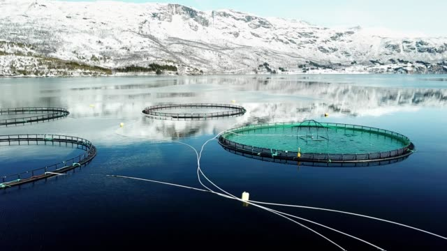
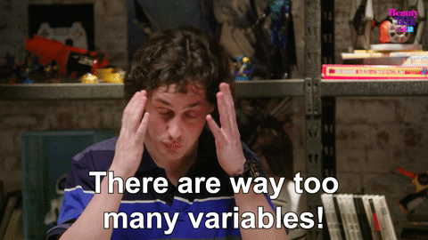
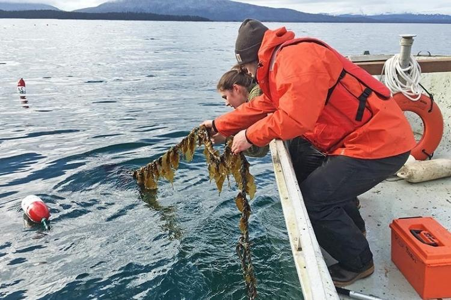

As the world demands more sustainably sourced food, what role can marine aquaculture (mariculture) play? In this episode, we explore a recent research paper by Jones et al. from 2022, which investigates the future of GHG emissions from three key mariculture sectors: seaweed, bivalve and fed finfish. Given our focus on algae-tech, let's review their seaweed industry findings.
It's well documented how mariculture products create lower greenhouse gas emission footprints than land-sourced or wild-caught alternatives.
In fact, when it comes down to it, total annual GHG emissions from aquaculture (marine and freshwater) was 385 million metric tons (Mt) CO2e in 2008 (the best available estimate), compared to the 4 billion–6.6 billion metric tons (Gt) of CO2e per year produced via terrestrial farming.

Despite this mighty difference, the team behind "Climate-Friendly Seafood: The Potential for Emissions Reduction and Carbon Capture in Marine Aquaculture" want to take sustainable mariculture to new levels. This paper, published at the turn of the year, explores how the three mariculture sub-sectors of seaweed, bivalve and fed finfish could further reduce their GHG emissions on-farm, or contribute towards carbon sequestration.
The paper starts by recognising how GHG emissions in the sector can come from upstream, on-farm, or downstream (e.g transportation) operations. Downstream operations appear to be particularly culpable. For example, the paper highlights how transport by ship, rail, or road can increase the climate impact of maricultured seaweed by 14%, 51%, and 139% respectively, compared with the product’s emissions footprint before leaving the farm. Despite this alarming reality, the research team chooses to concentrate its sustainable recommendations on improving on-farm activities, and not on ways to clean up downstream transportation. They conclude that it's too challenging to generalise a downstream emissions footprint for an aquaculture sub-sector like seaweed, particularly when there is so much variability in where and how a product reaches the market.

Unsurprisingly, the report shows seaweed mariculture has much lower GHG emissions than fed finfish and bivalve mariculture, with emissions ranging from 11.4 to 28.2 kilograms (kg) of CO2e per metric ton of seaweed produced (excluding downstream transport emissions).
Predictably, the main sources of these GHG emissions include the creation of infrastructure (like drying facilities), and on-farm activities which use fuel and electricity like farm grow-out.
At this point the team decides to give their first recommendation. After identifying these activities as more damaging, they highlight the need for improved on-farm climate-friendly operations. As a result, they encourage farmers to make a conscious shift to low-emissions energy sources and biofuels to run their farms, and use sustainable building materials whenever possible.

Following this initial point, the article presents several additional recommendations for industry leaders to improve sustainability in the space. Firstly, they outline the need to create climate-friendly bioproducts like biofuels, biochar and future feed from seaweed. These could help create a carbon neutral market, with biofuels in particular representing a massive opportunity. For example, a square kilometre of cultivated seaweed could reduce fossil fuel emissions by 1500 tons of CO2e a year if it was used to make biofuels. Unfortunately, it's not all plain sailing, and the paper wastes no time in describing the technological challenges which remain for these bioproducts. These come in the forms of exorbitant pricing, engineering constraints and difficulty cultivating certain seaweed species.
The next recommendation involves unleashing direct carbon sequestration through the direct transportation of organic carbon in seaweed into long-term marine carbon stores. As many of you may know already, the potential in this practice is clear, but negative consequences like impact on deep sea ecosystems needs to be evaluated further. In addition, the potential benefits should be weighed up against additional transport and infrastructure emissions required for this kind of mariculture.
.jpg)
Final recommendations from Jones et al. revolve around the benefits of co-farming seaweed with bivalves for increased productivity, the importance of shortening supply chains through building regional markets, and the need for more thorough carbon accounting in the industry with more specific mariculture policy frameworks.
Want to get involved?
Contact us at peter@bluetechbase.com